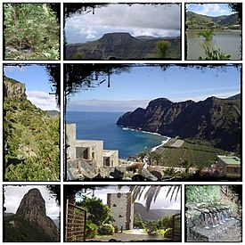

La Gomera es una de las siete islas principales de las islas Canarias (España), y la segunda más pequeña. Está situada en el océano Atlántico, en la parte occidental del archipiélago. Pertenece a la provincia de Santa Cruz de Tenerife. Su capital es San Sebastián de La Gomera, donde se ubica la sede del Cabildo Insular. La isla es desde el año 2012 Reserva de la Biosfera.
